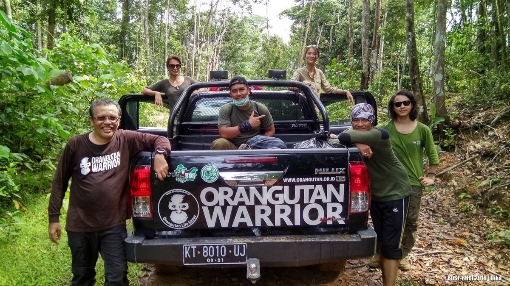
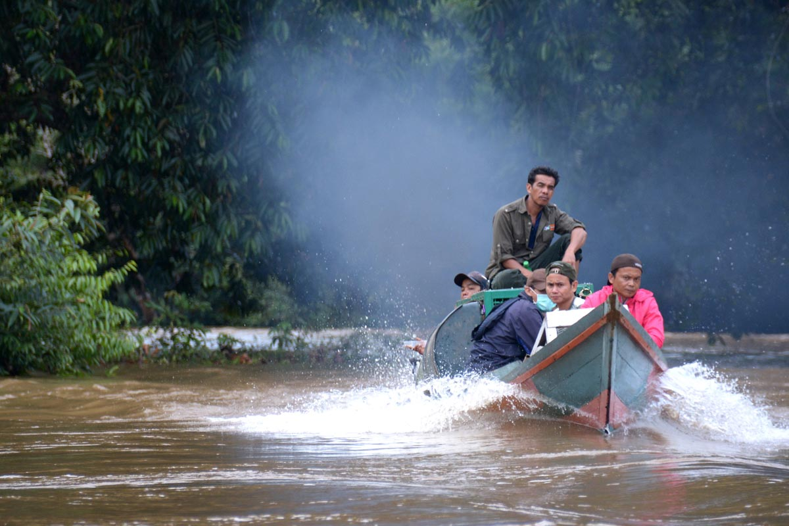

Auswilderungen in Ost-Kalimantan: Kejeh Sewen Forest
Kehje Sewen (KJ7) - "Großer Affe" in der Sprache der Dayaks - ist ein insgesamt 86.000 Hektar (860 km²) großes Regenwaldgebiet im Nordwesten der Provinz Ost-Kalimantan. Um dort Orang-Utans auswildern zu können, erwarb die BOSF im Jahr 2010 vom Staat eine Nutzungskonzession – eine Ecosystem Restoration Concession (ECR). Diese ist zunächst auf 60 Jahre beschränkt, es besteht jedoch die Option einer Verlängerung um weitere 30 Jahre.
Wälder gehören nach indonesischem Recht dem Staat. Ein regelrechter Kauf größerer Waldflächen ist deshalb nicht möglich. Allerdings vergibt der Staat gegen Entgelt verschieden definierte Nutzungsrechte, u.a. auch für ausgedehnte Ölpalmen- und andere Plantagen, die eine Zerstörung der Wälder mit sich bringen. Mittlerweile ist es möglich, das Recht (und die Pflicht) zu erwerben, Waldgebiete zum Zwecke ihrer Erhaltung zu „nutzen“. Allerdings wird auch die ECR vom Staat wie eine kommerzielle Nutzungskonzession behandelt und kann daher nur von Privatunternehmen erworben werden. Die BOSF gründete deshalb die Firma PT. Restorasi Habitat Orangutan Indonesia (PT. RHOI), die im Auftrag von BOS die Nutzungsrechte hält und das Gebiet verwaltet. Auch finanziell stellt der Staat derartige Schutzkonzessionen einer kommerziellen Nutzung gleich und verlangt hohe Gebühren. KJ7 unter Schutz zu stellen, kostete die BOSF umgerechnet über eine Million CHF.
KJ7 ist von der Rettungsstation in Samboja Lestari aus in ca. 15 Stunden per Jeep zu erreichen. Das restliche Stück zum Basis-Camp muss zu Fuß zurückgelegt werden.
Bedingt durch seine Topographie lohnte sich der kommerzielle Holzeinschlag in KJ7 nicht. Aus diesem Grund besteht das Gebiet noch zu weiten Teilen aus nahezu unberührtem Primärwald. Von den 860 km² Gesamtfläche sind jedoch nur etwa 390 km² als Auswilderungsgebiet geeignet, nämlich jene, die unter 900 Metern Höhe liegen. Darüber wird das Nahrungsangebot für Orang-Utans zu knapp. Insgesamt können deshalb ca. 130 Orang-Utans aus Samboja Lestari dort ausgewildert werden, was seit April 2012 auch erfolgreich geschieht.
Als Auswilderungsgebiet eignet sich KJ7 ausserdem deshalb, weil keine größere wilde Orang-Utan-Population vorhanden ist, die mit den Neuankömmlingen in Konkurrenz und Konflikt geraten könnte. In KJ7 verläuft eine Wasserscheidenlinie. Aus ihr entspringt der Mahakam-Fluss, der durch Ost-Kalimantan fließt und in Samarinda nahe Samboja Lestari ins Meer mündet. Einige Wälder stehen hier bereits unter Schutz. Eine weiträumige Vernetzung des KJ7 Waldes mit diesen Schutzgebieten ist dadurch möglich, was den ökologischen Wert des Auswilderungsgebietes noch erhöht. Das Gebiet liegt vor einer Gebirgskette, die das indonesische Kalimantan vom malaysischen Teil Borneos trennt.

Auswilderungen in Zentral-Kalimantan: Bukit Batikap & BBBR NP
Murung Raya ist die am weitesten abgelegene der 13 „Regentschaften“ Zentral-Kalimantans. Ganz im nordöstlichen Teil der Provinz gelegen stehen dort drei Auswilderungsgebiete zur Verfügung mit einer gesamten Aufnahmekapazität von ca. 400 Orang-Utans: Murung Ulu, Sungai Busang und Bukit Batikap. Für das ca. 200 km² grosse Waldgebiet Bukit Batikap konnte die BOSF Landnutzungsrechte erwerben. Im Februar/März 2012 wurden dort die ersten Orang-Utans ausgewildert.
Als Verwaltungszentrum des Bezirkes dient die Grenzstadt Puruk Cahu, die mit dem Boot, mit kleinen Flugzeugen oder mit dem Auto erreicht werden kann. Die Orang-Utans verbringen hier ihre letzte Nacht vor der Auswilderung. Hinter Puruk Cahu sind die Transportwege jedoch kaum ausgebaut. Von dort aus sind die Auswilderungsgebiete deshalb nur per Helikopter erreichbar.
Murung Raya's Geografie ist gekennzeichnet durch die Flussquelle des Barito-Stroms, des grössten Flusses in Süd-Borneo. Die Quelle des Flusses besteht aus drei Zuflüssen, die nördlich von Puruk Cahu in einem sehr hügeligen Gebiet (meist unterhalb von 500 Höhenmetern) zusammen fliessen. Nur nördlich erreichen die Berge eine Höhe von bis zu 1'500 Meter. Die breiten Flussquellen isolieren das dicht bewaldete und kaum besiedelte Gebiet. Die wenigen Menschen der Region gehören meist der ethnischen Gruppe der Dayaks an, die ursprünglich nomadisch lebten und sich heute v.a. vom Fischfang und der Landwirtschaft ernähren.
Eine grössere wild lebende Orang-Utan-Population existiert nicht, was vermutlich daran liegt, dass die Orang-Utans in dieser Region früher stark gejagt wurden. Nur vereinzelt wurden Orang-Utan Männchen gesichtet, obwohl die Waldgebiete im Murung Raya Distrikt reich an Nahrungspflanzen für Orang-Utans sind. Beste Auswilderungsbedingungen also für die ca. 170 Orang-Utans, die wir dort seit 2012 in die Freiheit entlassen konnten!

Die Aufnahmekapazität Bukit Batikap’s ist mittlerweile allerdings erschöpft. Aus diesem Grund nutzt die BOSF seit Kurzem Gebiete des Bukit Baka Bukit Raya Nationalparks (BBBR NP) für Auswilderungen in Zentral-Kalimantan. Die Bedingungen vor Ort sind optimal. Die Artenvielfalt dieses fast unberührten Waldgebietes verschlägt selbst erfahrenen Primatologen und Biologen den Atem. Die beiden Auswilderungsgebiete im Nationalpark (Sei Bimban und Sei Mahalut) befinden sich 900 Meter unter dem Meeresspiegel und beherbergen keine grössere wilde Orang-Utan-Population. Als Schutzgebiet ist der BBBR Nationalpark vor einer Ausbeutung durch die Palmölindustrie sicher. Mit einer Gesamtfläche von 27.000 Hektar bietet dieses Auswilderungsgebiet Platz für über 300 Orang-Utans. Bis heute haben wir dort fast 50 unserer ehemaligen Schützlinge ausgewildert.
Eine ganz gewöhnliche Auswilderung
Mitte Oktober 2016 brachte das Auswilderungsteam erneut 5 Orang-Utans in die Wildnis. Einer von ihnen war Kent. Das Orang-Utan-Männchen wurde bereits im März 2014 ausgewildert. Seine Freiheit währte aber nur 2 Monate. In einem Kampf mit einem anderen Orang-Utan Männchen wurde er so massiv verletzt, dass wir ihn wieder einfangen und in die Station bringen mussten. Nun endlich nach 2 Jahren Rehabilitation konnte Kent zurück in die Freiheit von Kehje Sewen - gemeinsam mit Rafli, Jamur, L-Lo und Saprol.
The same procedure as everytime? Sicher nicht. Auch wenn in einer Auswilderung sehr viel Routine steckt, ist jede von ihnen so individuell wie ihre Kandidaten. Diesmal machte dem Team das schlechte Wetter zu schaffen. Tagelang regnete es ununterbrochen, alle Strassen und v.a. die kleinen Dschungelpisten waren aufgeweicht und matschig. Immer wieder blieben die Autos im Schlamm stecken und mussten sprichwörtlich aus dem Dreck gezogen werden. Erst nach 5 Stunden wurde die erste Zwischenstation erreicht. Dort begrüssten Angehörige des Wehean Dayak Stammes die neuen Mitbewohner ihres Waldes mit einem traditionellen Tanz.
Über einen schmalen Weg wurden die Transportkäfige mit Bambusstangen durch den Regenwald zum Fluss getragen und mit einem kleinen Boot zur anderen Flussseite gebracht. Bei einem schmalen aufgeweichten Weg und einem durch den Regen angeschwollen Fluss definitiv keine alltägliche Herausforderung. Am anderen Ufer angekommen wurden die Käfige auf einen Lkw verladen und an die endgültigen Auswilderungspunkte gebracht. Um 5 Uhr nachmittags war es endlich so weit: Kent, Rafli, Jamur, L-Lo und Saprol verliessen ihre Käfige in Richtung Freiheit. Doch zwischenzeitlich war es so dunkel geworden, dass das Team nicht mehr zurückkehren konnte. Rasch wurde für die Nacht ein Not-Camp errichtet und die Abenddämmerung sowie die Nacht zum ersten Nest-to-Nest-Monitoring genutzt.